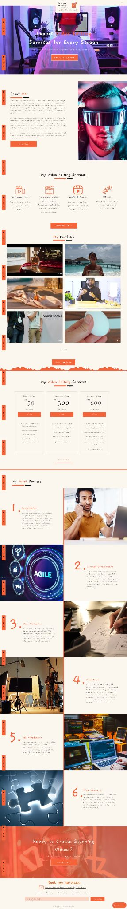

← Back to Work
Creator website
DaVinci Resolve Craftsman
The challenge
Organize specialist expertise and resources into a clearer path.
Key decisions
- Keep the specialty obvious.
- Group resources by purpose.
- Connect learning to the next action.
The improved journey
Visitors can identify the expertise and continue into the right resource path.